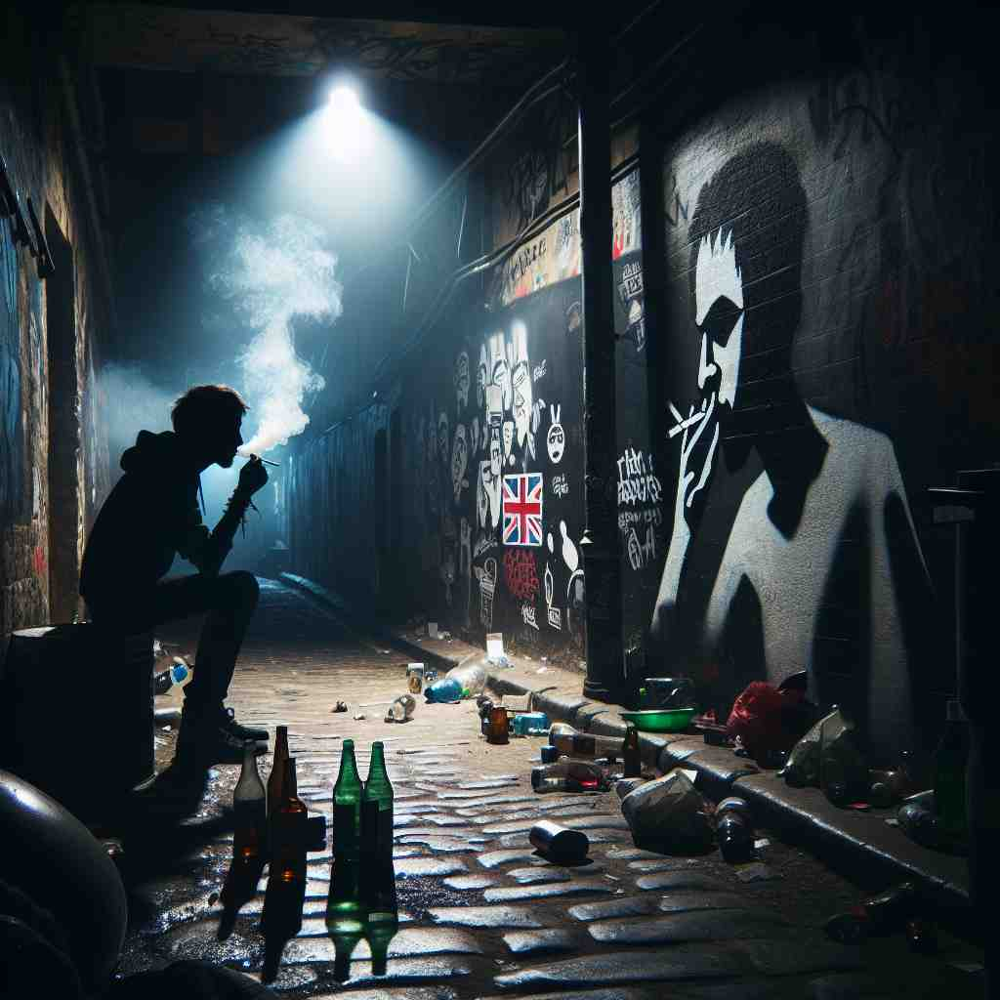

💬 He is determined to overcome a vice in his character. 他决心克服自己性格中的一个缺点。

💬 You need to hold it in a vice to cut the wood safely. 您需要将它夹在台钳中，以安全地切割木材。

💬 Many people see the vice of smoking as a serious problem. 许多人认为吸烟的恶习是一个严重的问题。
💬 He is determined to overcome a vice in his character. 他决心克服自己性格中的一个缺点。
💬 You need to hold it in a vice to cut the wood safely. 您需要将它夹在台钳中，以安全地切割木材。
💬 Many people see the vice of smoking as a serious problem. 许多人认为吸烟的恶习是一个严重的问题。
🧠 想象'vice'是一个紧紧抓住人不放的道德缺陷。这个核心概念贯穿了所有含义：从个人缺点到社会问题，再到紧紧夹住物体的工具，以及表示替代或次要地位的用法。记住这个'紧抓不放的缺陷'的意象，可以帮助你联想并记忆'vice'的各种用法。
🔈 [vaɪs]
🗝️ n. a moral fault or weakness in someone's character 性格中的道德缺陷或弱点
🎭 在一个心理咨询室中，一位顾客对心理医生敞开心扉，谈及自己的弱点。他谈到无法抵挡的嫉妒心如何影响了人际关系，心理医生认真倾听并帮助他认识到这是一种character上的 'vice'，即性格上的弱点。
💬 Gambling was his only vice. 赌博是他唯一的恶习。
🌳 词根 'vic(e)-' 来自拉丁语，表示 '代替' 或 '代理'。在某些情况下也表示 '恶习'。在不同的上下文中，可能指代不同的含义，例如职位的替代或某种坏习惯。
💡 可以记住 'vice' 为 '代替' 或 '代理' 的概念，从而联想到相应职位的替代者或代理人。在恶习的意义上，可以通过 '有害的替代' 来记忆。
🗝️ n. immoral or wicked behavior 不道德或邪恶的行为
🎭 在一个警察局，警官们正在讨论最近发生的案件。他们调查发现一伙人秘密经营非法活动，危害社会。警官道出这类活动是纯粹的 'vice' 行为，即不道德和邪恶的行为。
💬 The city was known for its vice and corruption. 这座城市因其罪恶和腐败而闻名。
🤔 由个人道德缺陷扩展到普遍的不道德行为
🗝️ n. a bad habit 一个坏习惯
🎭 想象一个戒烟支持小组的聚会。一位成员分享说，吸烟是他多年来无法摆脱的 'vice'，一种坏习惯。他期待能通过支持和互助战胜它。
💬 Smoking is a vice that's hard to quit. 吸烟是一种难以戒掉的恶习。
🤔 道德缺陷具体表现为不良习惯
🗝️ n. a tool with movable jaws for holding an object firmly in place 一种具有可动夹口的工具，用于将物体牢牢固定在适当位置。
🎭 在一个木工车间里，工匠正在精心打磨一块木头。他将木头固定在工作台上的 'vise' 中，确保它稳固不动，以便精细加工。
💬 He used a vice to hold the piece of wood while sawing. 他用虎钳夹住木料以便锯切。
🤔 比喻义，如同道德缺陷"紧紧抓住"人一样，这种工具也能紧紧夹住物体
🗝️ prefix used in titles to indicate that someone is second in rank 在标题中用以表示某人是第二等级的
🎭 在一个企业的高层会议上，CEO宣布了一项重要决策，他身边的 'vice president' 微笑着点头，体现了 'vice' 作为职称中第二重要职位的用法。
💬 She was appointed vice president of the company. 她被任命为公司的副总裁。
🤔 源自拉丁语'代替'之意，暗示存在某种不足需要被替代
🗝️ prep. instead of or in place of 代替
🎭 在一个正式典礼上，主持人因为一些原因无法到场，临时换了人。新的主持人说道：'I am speaking vicariously, as vice for the main speaker today.' 表示他作为替代者来发言。
💬 He used water vice milk in the recipe. 他在食谱中用了水代替牛奶。
🤔 同样源自'代替'之意，表示某物取代了应有之物，暗示一种不足